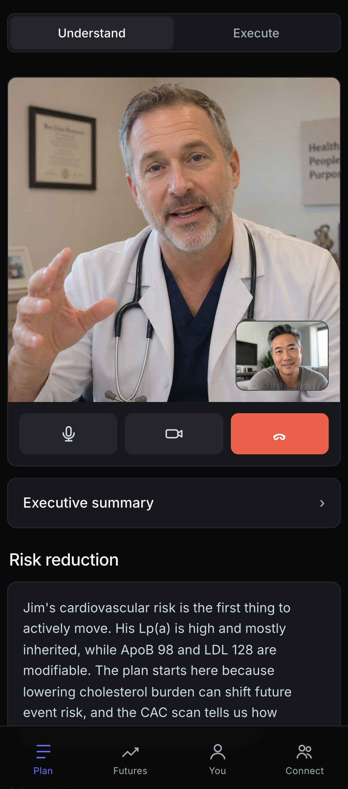
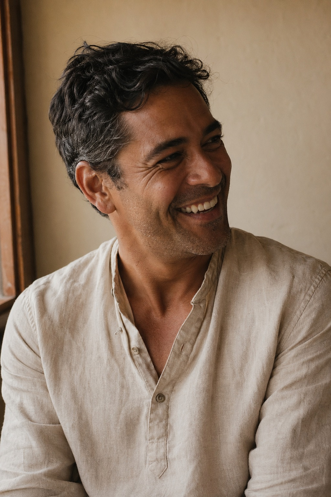

Your best days are still ahead.
You already know it's possible. Our physicians leverage AI and your genetic, lab, and wearable data to give you a clear path to your future moments.
Scroll
You already know it's possible. Our physicians leverage AI and your genetic, lab, and wearable data to give you a clear path to your future moments.
Every body follows a curve. In your 40s and 50s you can do almost anything. Decades later, the same body negotiates with stairs and grandkids from the chair. The slope between those two points is being written right now, quietly, by what you do and don't catch.
The curve is not just a slow fade. Cardiac events, cancers, strokes can fork the line. One future is the one where the event never happens. The other is the one where it does, and the body that comes out the other side moves on a permanently lower trajectory. Same person. Two different rest-of-lives.
Capability is what you can do. Vitality is what it feels like to do it. The line can still be high while the color starts fading early, which is why energy, sleep, mood, recovery, and pain belong on the same curve.
The curve is not destiny. The work we do now is how more of life stays open: stronger years, better recovery, more trips, more climbs, more moments where your body still says yes. We are not just delaying decline. We are creating a future worth moving toward.
The curve is a simple way to see the relationship between capability, risk, and how life feels over time.
The point is not to pretend decline disappears. The point is to see the slope while there is still time to change it.
Cardiac events, cancer treatment, and strokes are not just moments. They can move the body onto a lower path.
Capacity is what you can do. Vitality is whether living inside that body still feels open, energetic, and worth saying yes to.
The work now is how more of life stays open: stronger years, better recovery, more trips, more climbs, and more moments where your body still says yes.

Genetics, labs, wearables, and history do not belong in separate silos. Aleron brings them into one physician-led view, with AI helping your doctor see what matters sooner. The result is a clearer next step.
A 163-gene panel screens for variants that can change care: cancer risk, cardiovascular risk, and how you metabolize common medications. Read once, used for life.
The Elite panel goes beyond a standard physical, with markers like ApoB, Lp(a), hsCRP, HbA1c, ferritin, homocysteine, and UACR. Your doctor sees the pattern, not just the result.
Sleep, recovery, heart rate, HRV, and activity stream in between visits. Your care plan can respond to how your body is actually trending.
Your genetic, lab, and wearable data stay protected in a HIPAA-compliant system. Never sold, never shared with insurers, never used to train outside models.
Onboarding is not a forty-page intake form. Labs are not a waiting room. Your physician consult is not the end of the line. It's where the loop begins.


Demographics, family history, lifestyle, screening history, collected the way every other app on your phone does it. Then your wearable connects in two taps and starts streaming the signals your physician will actually use.


Spit in a tube. Drop it in the prepaid mailer. The 163-gene Invitae panel screens for the variants that actually change a care plan: moderate-penetrance cancer risks, cardiovascular variants, pharmacogenomic markers.
Your Aleron lab order is waiting at your nearest Quest patient service center. The Elite panel, a comprehensive metabolic, cardiovascular, and inflammatory marker workup, runs alongside an ApoB and Lp(a) draw most physicals miss.
CBC + CMP · ApoB · Lp(a) · hsCRP · HbA1c · TSH · Vitamin D · ferritin · homocysteine · uric acid · UACR
By the time you sit down, your physician has already reviewed every result, every wearable signal, and the output of every Aleron risk model. The hour is spent on what to do, not on retelling your history.
You leave with one top priority: the single thing that moves your risk picture most. As you act, your wearable streams the result. New labs feed back in. The engine reruns. A new top priority surfaces. The loop is the product.
"Best part isn't the labs or the engine. It's getting a voice message from my doctor on a Tuesday afternoon explaining what to do next, like a friend who happens to be brilliant."

"My wife signed me up. I was the skeptic. Six months in I'm the one telling friends they need this. It's the first time I've felt actually seen by a doctor."
"I have a family history of breast cancer. Aleron flagged a risk pattern my last three physicians had missed, and built a screening cadence that actually fits my life."
"Aleron caught my ApoB trend three years before my regular physical would have. That's the part I'm still thinking about."
More than half of new members leave their first Aleron review with a care plan their PCP wouldn't have given them. Same labs. Same body. Different decisions.
Drivers overlap; the headline figure is the union, not the sum. Drawn from PREVENT (AHA 2023), CAC reclassification studies (MESA, CAC Consortium), and pharmacogenomics + clinical-grade genetic-panel actionable yield in adult preventive populations.
Because strong health is a position to maintain, not a report to file away.
167-gene panel screened for variants that can change screening, medication, and family-risk decisions for life.
100-marker Quest Elite panel every six months. Trend lines, not snapshots. Proof that the plan is still holding.
Sleep, HRV, resting heart rate, training load, blood pressure, labs, and body composition reviewed as a changing baseline, not standalone numbers.
Unlimited access to a physician who has your full picture. No 15-minute visits. No starting over each time.
Clear thresholds for when to act, when to recheck, and when to leave a finding alone. Restraint is part of the care plan.
Guidelines, trials, genetic interpretation, and screening standards change. We tell you when they change your plan.
Membership opens in waves. Apply to be considered for the current cohort. We're currently serving members in Texas and California.
Apply →Bringing Aleron to your executives, members, or insureds? We'll walk you through a live demo of the platform and the methodology.
See a demo →